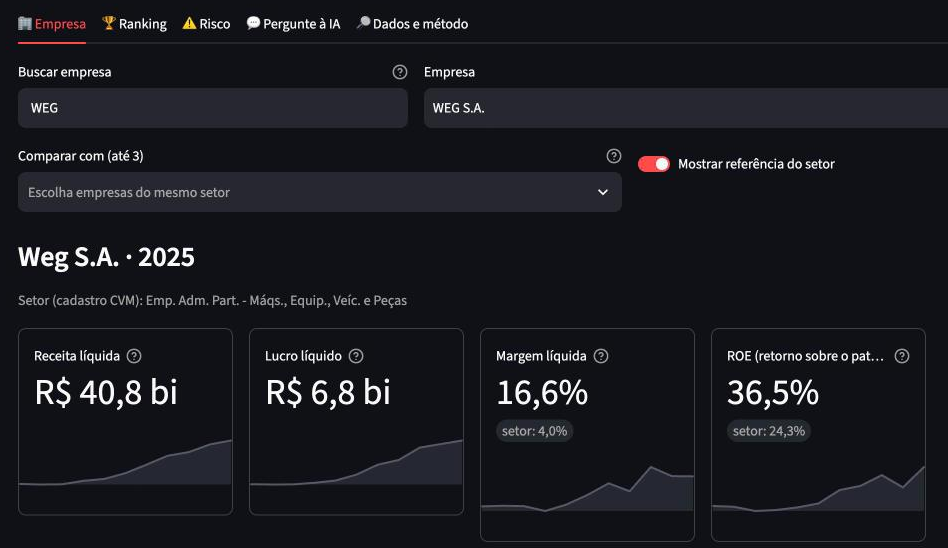

Etapas 8 e 9 · Projeto completo
Do arquivo bruto da CVM
ao painel.
Next Step SP · painel

35,2 mi
linhas da CVM,
só o que mudou
30/30
métricas conferidas
à mão
20/20
na prova
do agente de IA
0,69
AUC do risco
(Altman: 0,66)
Um comando, do download ao painel. E cada número
volta até a
linha original da CVM
.
ambiente
base
ingestão
modelagem
regras
agente IA
ML
dashboard
▲ este post
automação
Marcelo Santos
· Next Step SP
Dados: CVM (licença ODbL)